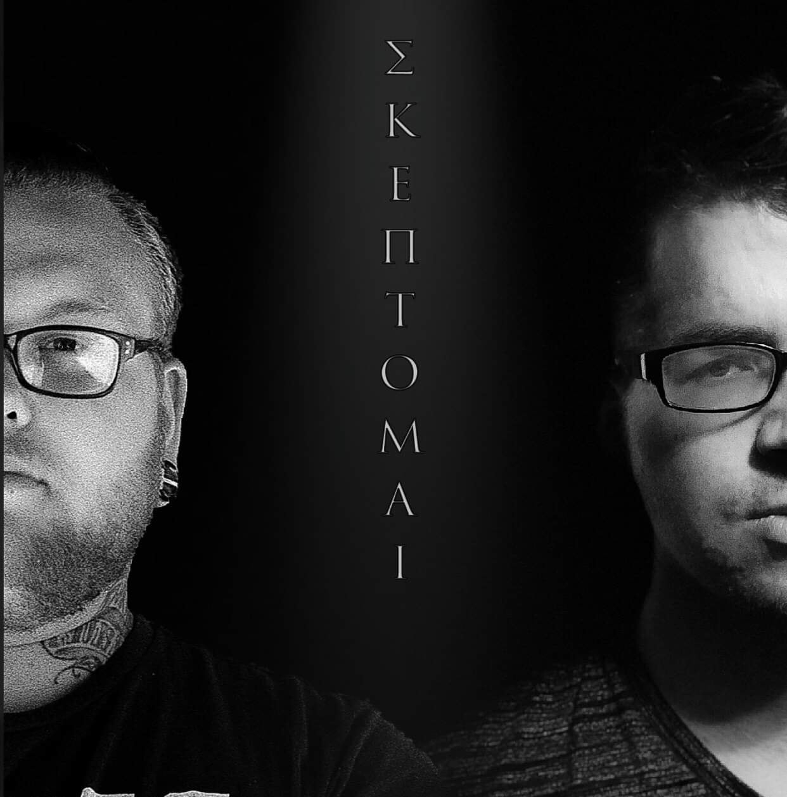

Peter Stone lives in the Pacific Northwest. He is a Web Developer, Actor, Blogger and Podcaster. He enjoys his free time by reading theology and classical literature, taking trips to Portland, Seattle, and other places, as well as going to the theatre. Other hobbies include typical outdoorsy things (like hiking and kayaking) that people claim to do while always being online. He is also a strong advocate against pineapple on pizza.
Check out the Skeptics Podcast
